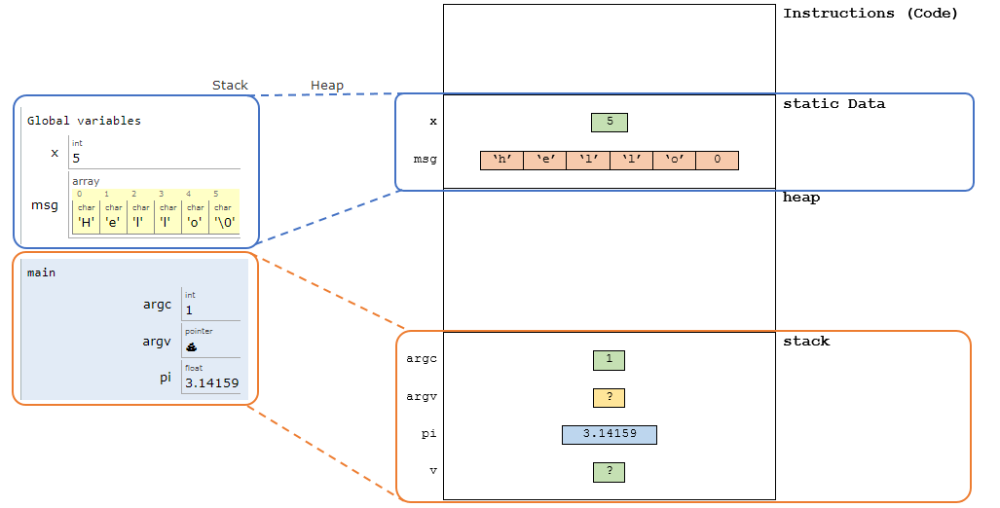
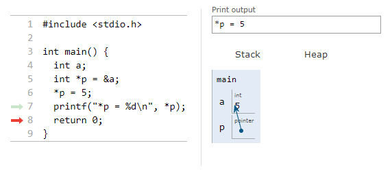
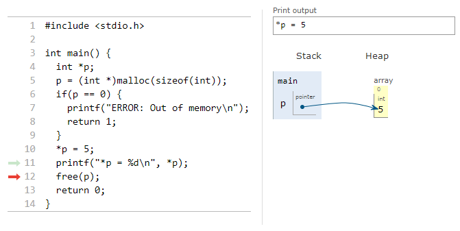
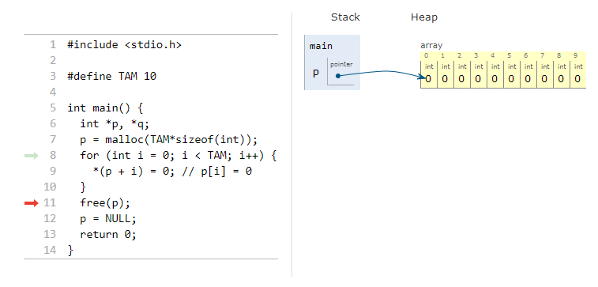
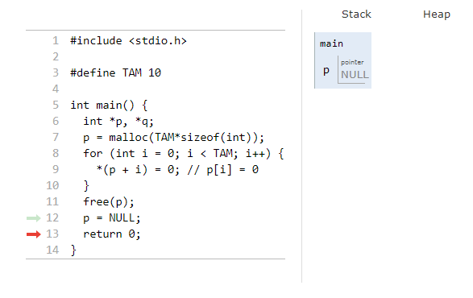
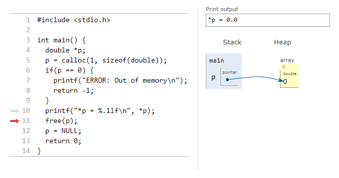

En los programas tipicos, la cantidad de memoria que usan es desconocida. Por ejemplo, cuando alguien emplea un editor de texto nunca sabe cuantas paginas va a escribir. Como el numero de paginas suele estar relacionada con elementos de memoria como matrices presuponer un numero maximo de paginas suele ser ineficiente, pues ello implicaria dos cosas:
Que se tenga gran cantidad de memoria ociosa si el usuario del editor no escribe en todas las paginas reservadas por la aplicacion.
Que el usuario se quede corto de paginas si escribe mucho, pues al tener el editor de texto el numero de paginas predefinido, es posible que el espacio en memoria no sea suficiente para lo que el usuario escribe.
Para dar administrar la memoria de manera mas eficiente, C permite introduce el concepto de reserva dinamica de memoria que no es otra cosa que el proceso de gestion de memoria en tiempo de ejecución segun las necesidades demandadas por la aplicacion. Gracias a esto, es posible que no sea necesario que el editor de texto conozca con antelacion el numero de paginas que debe escribir el usuario, pues gracias a la gestion dinamica de memoria, el editor puede ir creando nuevas paginas a medida que el usuario va demandandolo. En esta seccion se verá las funciones que son empleadas en C para hacer esto posible.
Cuando un programa es cargado en memoria, este se organiza en diferentes regiones memoria conocidas como segmentos que se usan para diferentes propositos.
Text Segment: Tambien conocido como code segment. Es el lugar en el que se encuentra el código ejecutable (o binario) asociado al programa.
Data Segment: Segmento donde se encuentran las variables y constantes asociadas al programa. Este se divide en:
Initialized data segment: Aqui se almacenan las variables globales y estaticas que son inicializadas antes de la ejecución del programa (inicialización explicita).
Uninitialized data segment (BSS - Block Started by Symbol): Contiene tolas las variables globales y estadicas que no se inicializaron explicitamente.
Heap: Segmento utilizado para la asignación de memoria durante la ejecución del programa. La asignación y liberación de memoria se hace mediante funciones como malloc, calloc, realloc y free. Es importante aclarar que esta es una región de caracter dinamico, pues su tamaño cambia a lo largo de la ejecución del programa.
Stack: Región empleada para almacenar las variables locales. Esta región tambien es dinamica ya que su tamaño cambia de manera automatica conforme a medida que se usan funciones.
Existen algunas represetaciones en la cuales los segmentos de Text Segment y Data Segment se combinan como un segmento conocido como Program Code tal y como se muestra a continuación:
Como se puede ver de la figura anterior, se resaltan los espacios de memoria y las variables que se encuentran en estos:
Espacio de memoria
Variables
Text
Instrucciones
Data
x, msg
Stack
argc, argv, v, pi
Heap
—
En la siguiente figura se muestra mas claramente como se distribuyen las variables anteriores en el mapa de memoria:

Fig. 68 Asignacion de las variables en el espacio de memoria.#
En la figura anterior, se puede ver que no hay variables en el heap pues no se hicieron asignaciones dinamicas de memoria el cual sera el proximo tema a tratar.
Para tratar esta parte abordemos un problema tipico para ver las diferentes formas de solucion desde el punto de vista del manejo de memoria. Supongase que se desean ingresar un conjunto de datos asociados con la temperatura a lo largo del dia, el ingreso de estos datos se hace de manera manual leyendo el numero de registros manuales existentes en una planilla para luego ingresarlos al sistema. Hacer un programa que facilite esta tarea.
Declarar un arreglo estatico de tamaño fijo asumiento que el numero de registros a ingresar nunca va a ser mayor que el tamaño fijo previamente definido. Esta forma de declaración es estatica por que la reserva de memoria (arreglo) se hace en tiempo de compilación. A continuación se muestra el código:
#include<stdio.h>#define NUM_MAX_REG 100intmain(){floatdatos[NUM_MAX_REG];// Se supone que no se van a ingresar mas de 100 registrosfloatreg;intnumReg;printf("Ingrese la cantidad de registros a leer: ");scanf("&d",numReg);if(numReg>NUM_MAX_REG){printf("ERROR: se pierden %d datos\n",numReg-NUM_MAX_REG);numReg=NUM_MAX_REG;}for(inti=0;i<numReg;i++){printf("Dato[%d]: ",i);scanf("%f",®);*(datos+i)=reg;}return0;}
Como se podra notar, la forma anterior es ineficiente por razones similares a las expuestas en la introducción.
Declarar un arreglo dinamico (automatico) de un tamaño especificado en tiempo de ejecución. El siguiente codigo ilustra esta idea:
#include<stdio.h>intmain(){floatreg;intnumReg;printf("Ingrese la cantidad de registros a leer: ");scanf("&d",numReg);floatdatos[numReg];for(inti=0;i<numReg;i++){printf("Dato[%d]: ",i);scanf("%f",®);*(datos+i)=reg;}return0;}
El problema de la forma anterior es que el compilador es previo a C99, no permite declarar un arreglo definiendo su tamaño a partir de una variable (siendo numReg) para el caso.
Declarar un arreglo dinamico de un tamaño especificado en tiempo de ejecución empleando las funciones propias de la libreria estandar para tal caso (malloc y calloc). En lo que respecta al caso, esta es la mejor forma. La descripción y uso de estas funciones sera tratada en breve. Por ahora veamos el codigo asociado.
#include<stdio.h>#include<stdlib.h>intmain(){float*datos;floatreg;intnumReg;printf("Ingrese la cantidad de registros a leer: ");scanf("&d",numReg);datos=(float*)malloc(numReg*sizeof(float));if(pF!=NULL){for(inti=0;i<numReg;i++){printf("Dato[%d]: ",i);scanf("%f",®);*(datos+i)=reg;}free(datos);return0;}
Important
Para hacer uso de las funciónes de manejo dinamico de memoria es necesario incluir el archivo cabecera stdlib.h en el código
En los siguientes ejemplos se muestra la diferencia entre declarar una variable en el stack y declararla en el heap usando reserva dinamica de memoria.
El código anterior se puede simular a continuación:
La siguiente figura muestre el efecto del codigo anterior:

Fig. 70 Accediendo desde un apuntador a una variable definida en el stack.#
La siguiente figura muestre el efecto del codigo anterior:
Figura 4. Asignacion dinamica de una variable usando malloc
Creando una variable en el heap
#include<stdio.h>#include<stdlib.h>intmain(){int*p;p=(int*)malloc(sizeof(int));if(p==0){printf("ERROR: Out of memory\n");return1;}*p=5;printf("*p = %d\n",*p);free(p);return0;}
A continuación, se puede simular el código anteriormente mostrado:
La siguiente figura muestre el efecto del codigo anterior:

Fig. 71 Asignacion dinamica de una variable en el heap usando malloc#
Analizar el siguiente ejemplo:
#include<stdio.h>#include<stdlib.h>intmain(intargc,char*argv[]){printf("location of code : %p\n",main);printf("sizeof(int) = %d\n",sizeof(int));int*p=malloc(8);int*p2=malloc(4);printf("location of heap : %p\n",p);printf("location of p2 in heap : %p\n",p2);*p=3;*(p+1)=2;{intx=3;printf("location of stack: %p\n",&x);}inty=-2;free(p2);return0;}
A continuación se muestra la simulación del código:
Este es un operador (no una funcion) que devielve la cantidad en bytes ocupada por una variable o algun tipo de dato. La sintaxis basica de este operador se muestra a continuacion:
size_tsizeof(type-name)
El size_t es un tipo de dato unsignedint retornado por el operador sizeof()
Ejemplo
En el siguiente codigo ejemplo se muestran algunos ejemplos del uso de este operador:
#include<stdio.h>intmain(){short*p;longlonga;printf("sizeof(short*) = %d\n",sizeof(short*));// Pasando un tipo de datoprintf("sizeof(p1) = %d\n",sizeof(p));// Pasando una variableprintf("sizeof(short) = %d\n",sizeof(short));// Pasando un tipo de datoprintf("sizeof(long long) = %d\n",sizeof(longlong));// Pasando un tipo de datoprintf("sizeof(long long) = %d\n",sizeof(a));// Pasando una variableprintf("sizeof(double*) = %d\n",sizeof(double*));// Pasando un tipo de datoprintf("sizeof(char*) = %d\n",sizeof(char*));// Pasando un tipo de datoprintf("sizeof(char) = %d\n",sizeof(char));// Pasando un tipo de datoreturn0;}
El código anterior puede ser simulado a continuación:
A continuacion se muestra la salida en el simulador para diferentes tipos de datos:
El manejo de la memoria en el heap consiste basicamente en reservar y liberar memoria en este segmento. Para reservar memoria se emplea la función malloc (o similares), mientras que para liberar (una porción de memoria previamente asignada) se emplea la función free. A diferencia de java, en C el proceso de gestion de memoria es manual por lo que es fundamental, despues de reservar memoria usando malloc, llamar a la función free si no se necesita usar mas la porción previamente reservada. Olvidar esto ultimo genera fugar de memoria (memory leaks) haciendo que se consuman recursos de memoria innecesariamente y degradando el funcionamiento de la aplicación.
A continuación vamos a ver con mas detalle las diferentes funciones para la gestión de memoria en el heap.
4.2.1. Asignación de memoria: Memory Allocation o malloc#
La función malloc permite reservar un bloque de memoria (sin inicializar) en el heap. El prototipo de esta función se muestra a continuación:
malloc
Sintaxis:
void*malloc(size_tsize)
Donde:
size: Numero de bytes que seran reservados
La funcion retorna la direccion en el heap a partir de la cual se reservó el tamaño de memoria solicitado o retorna NULL si no es posible reservar la cantidad de memoria. Cabe recordar que void* indica que la dirección retornada es genérica, es decir, en esa dirección se puede almacenar cualquier tipo de variable.
Usando malloc tambien es posible declarar arrays en memoria dinamica pasando el tamaño del array en bytes. Asi por ejemplo, para declara un array de N elementos, el valor pasado como parametro a la funcion malloc sera N*sizeof(dataTipe).
La función free libera un bloque de memoria previamente reservado en el heap. El prototipo de esta función se muestra a continuación:
free
Sintaxis:
voidfree(void*pointer);
Donde:
pointer: apuntador con la dirección del bloque de memoria (previamente reservado con malloc o con calloc) a liberar.
Ejemplos
Para comprender el uso del par de funciones anteriormente mencioadas se muestran algunos códigos a continuación:
Hacer un programa que reserve y libere una variable tipo int en el heap
#include<stdio.h>#include<stdlib.h>intmain(){int*p,*q;p=(int*)malloc(sizeof(int));q=p;*p=10;printf("%d\n",*q);*q=20;printf("%d\n",*q);free(p);// Tambien para el caso puede ser qreturn0;}
La simulación del programa anterior se muestra a continuación:
La salida del codigo anterior se muestra a continuacion:
Asignar NULL a un apuntador no es obligatorio, pero es buena practica. Esto para evitar algun error si el apuntador es erroneamente utilizado despues de que la memoria ha sido liberada.
Crear dinamicamente un array de 10 elementos y llenarlo de ceros, pero esta vez haga uso de la buena practica de programacion para entenderla.
#include<stdio.h>#include<stdlib.h>#define TAM 10 intmain(){int*p,*q;p=malloc(TAM*sizeof(int));for(inti=0;i<TAM;i++){*(p+i)=0;// p[i] = 0}free(p);p=NULL;return0;}
La simulación del código se muestra a continuación:
La salida del codigo anterior se muestra a continuacion cuando se hace la reserva dinamica de memoria:

Fig. 76 Salida codigo 4 tras la reserva con malloc.#
El efecto despues de liberar memoria y poner el apuntador a NULL:

Fig. 77 Salida codigo tras aplicar del free y poner el apuntador en valor NULL.#
Definir e inicializar a cero un dos array de 4 elementos. Uno de estos arrays estará en el stack y el otro estara en el heap
#include<stdio.h>#include<stdlib.h>intmain(intargc,char*argv[]){// Reserva en el stackintA_stack[4];printf("sizeof(int) = %d\n",sizeof(int));for(inti=0;i<4;i++){A_stack[i]=0;}// Reserva en el heapint*A_heap=malloc(16);// 4*4 = 4*sizeof(int) = 16 for(inti=0;i<4;i++){// A[i] = 0;// *A_heap = 0;// A_heap++;*(A_heap+i)=0;//A_heap[i] = 0;}free(A_heap);return0;}
La simulación del código se puede realizar a continuación:
Haciendo uso de malloc hacer una copia de una cadena de caracteres definida en el stack en otra definida en el heap. Despues de usar la cadena que se definió en el heap usar free para liberarla.
4.2.3. Asignación de memoria con inicializacion: calloc#
La función calloc permite reservar e inicializat a 0 un bloque de memoria en el heap. El prototipo de esta función se muestra a continuación:
calloc
Sintaxis:
void*calloc(size_tnum,size_tsize)
Donde:
num: numero de elementos consecutivos a reservar.
size: Tamaño en bytes de cada elemento.
El espacio total reservado en la funcion es de numElements*size. Normalmente, la funcion retorna un apuntador que contiene la direccion inicial del bloque reservado en el heap. En caso de que no haya suficiente memoria disponible la funcion retornara NULL.
Ejemplos
A continuación, se muestran algunos ejemplos haciendo de uso de la función calloc
Declare una en el heap un dato double inicializado a 0.
#include<stdio.h>#include<stdlib.h>intmain(){double*p;p=(double*)calloc(1,sizeof(double));if(p==0){printf("ERROR: Out of memory\n");return-1;}printf("*p = %.1lf\n",*p);free(p);p=NULL;return0;}
La simulación del programa anterior se muestra a continuación:
La salida del codigo anterior se muestra a continuacion:

Fig. 78 Salida codigo tras la reserva con calloc.#
Crear dinamicamente un array de 10 elementos enteros y llenarlo de ceros por medio de la funcion calloc.
#include<stdio.h>#include<stdlib.h>intmain(){int*p;p=(int*)calloc(10,sizeof(int));if(p==0){printf("ERROR: Out of memory\n");return-1;}free(p);p=NULL;return0;}
La simulación del programa anterior se muestra a continuación:
4.2.4. Reasignación de memoria: Memory Re-allocation o realloc#
La función realloc permite redimensionar un bloque de memoria previamente reservada con malloc. El prototipo de esta función se muestra a continuación.
realloc
Sintaxis:
void*realloc(void*ptr,size_tnew_size)
Donde:
ptr: Puntero a memoria.
new_size: Nuevo tamaño requerido.
Si el tamaño es reducido, hay datos que se pueden perder. Si el tamaño es incrementado y la funcion es incapaz de extender la localizacion existente, esta asignara un nuevo espacio de memoria y copiara los datos a traves de esa retornando un puntero a la memoria nuevamente asignada.
Ejemplos
A continuación, se muestran algunos ejemplos haciendo de uso de la función realloc
El siguiente ejemplo muestra un caso de uso de la función realloc.
#include<stdio.h>#include<stdlib.h>#define TAM1 10 #define TAM2 5#define TAM3 15intmain(){int*p;p=(int*)malloc(TAM1*sizeof(int));printf("Ubicacion del apuntador tras el malloc: %p\n",p);for(inti=0;i<TAM1;i++){*(p+i)=i+1;// p[i] = 0}p=realloc(p,TAM2*sizeof(int));printf("Ubicacion del apuntador tras el primer realloc: %p\n",p);p=realloc(p,TAM3*sizeof(int));printf("Ubicacion del apuntador tras el segundo realloc: %p\n",p);free(p);p=NULL;return0;}
La simulación del programa anterior se muestra a continuación:
La salida del codigo anterior se muestra a continuacion:
#include<stdio.h>#include<stdlib.h>intmain(){intF=3;intC[]={4,2,3};intval=0;// Reserva de espacio para la matriz irregular en el heapint**jagged_array=(int**)malloc(F*sizeof(int*));for(inti=0;i<F;i++){// jagged_array[i] = (int *)malloc(C[i]*sizeof(int));*(jagged_array+i)=(int*)malloc(C[i]*sizeof(int));}// Llenado de la matriz irregularfor(inti=0;i<F;i++){for(intj=0;j<C[i];j++){// jagged_array[i][j] = ++val;*(*(jagged_array+i)+j)=++val;// printf("%d ", jagged_array[i][j]);printf("%d ",*(*(jagged_array+i)+j));}printf("\n");}// Liberacion del espacio en el heap asociado a la matriz irregularfor(inti=0;i<F;i++){free(*(jagged_array+i));*(jagged_array+i)=NULL;}free(jagged_array);jagged_array=NULL;return0;}
La simulación del código anterior se puede realizar a continuación:
Implementar una lista enlazada sencilla.
El código solución se muestra a continuación (Para simularlo usa el siguiente link)
#include<assert.h>#include<stdlib.h>#include<stdio.h>structnode{intdata;structnode*next;};voidprint_list(structnode*head);structnode*insert_at_end(structnode*head,intdata);intdelete_at_front(structnode**phead);voiddelete_at_begin(structnode**phead);voidaddOne(int*pn);intmain(){intn=100;addOne(&n);printf("n = %d\n",n);structnode*head=NULL;head=insert_at_end(head,10);print_list(head);head=insert_at_end(head,20);print_list(head);head=insert_at_end(head,30);print_list(head);delete_at_begin(&head);print_list(head);delete_at_begin(&head);print_list(head);delete_at_begin(&head);print_list(head);return0;}intdelete_at_front(structnode**phead){structnode*first=*phead;assert(first!=NULL);*phead=first->next;intdata=first->data;free(first);returndata;}structnode*insert_at_end(structnode*head,intdata){// create a new node.structnode*new_node=malloc(sizeof(structnode));assert(new_node!=NULL);new_node->data=data;new_node->next=NULL;// list is empty.if(head==NULL){head=new_node;returnhead;}// list has some elements already.structnode*current=head;while(current->next!=NULL){current=current->next;}current->next=new_node;returnhead;}voidprint_list(structnode*head){structnode*current=head;if(current==NULL){printf("Empty list.\n");return;}else{while(current){printf("|%d|%p| -> ",current->data,current->next);current=current->next;}printf("\n");}}voiddelete_at_begin(structnode**phead){structnode*first=*phead;*phead=(*phead)->next;free(first);}voidaddOne(int*pn){*pn=*pn+1;}
 Figura 4. Asignacion dinamica de una variable usando malloc
Figura 4. Asignacion dinamica de una variable usando malloc